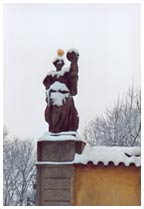

|
|

| |
 |
|
The arms of Benatky are represented
by the castle, the symbol of the town, which
overhangs the river Jizeriou. The two small blazons decorated
with branches are the coat of arms of the
first landowners, the lords of Drazice. The
origin and meaning of the blazon depicting a
dragon remain unknown to this day.
|
|
| |
The town
of Benatky arose during the Middle Ages at the intersection of several trade
routes.
The earliest record of the village of Obodr
dates back to 1052.
Nevertheless, the history of Benatky can be traced
back to 1346 when John of Drazice, the landowner,
obtained permission to build a town and monastery on the hill
dominating the river Jizeriou.
The
monastery
was
completed in 1349 by the church of the Birth of the Virgin
Mary, which today is incorporated within the castle. |
 |
| |
During the war of
the Hussites, the influence of the monastery gradually waned.
The
death of Lord Drazice in 1385 gave rise to a troublesome period
characterised by the difficulties of succession encountered by the
family.
From 1526, Friedrich of Donin settled in Benatky, where
he had a Renaissance castle built on the ruins of the
monastery.
|
 |
| |
In 1599, the entire building and its
grounds were sold
to the Czech emperor, Rudolph II, who used it for setting
up Tycho Brahe's observatory. Furthermore, it was here that the Danish
astronomer met his disciple, Johannes Kepler, in 1600. |

| |
After the Thirty Years' War, Emperor Ferdinand III awarded
the castle to the cavalry general, Johann von Werth, in recognition
of his bravery. He added the north wing and started
construction on the church's tower.
|
| |

|
|
At the end of
the 18th century, the Benatky estate came into the hands of the
Archbishop of Prague, Peter Antonin Prichovsky von Prichovice. The
latest rococo-style changes were made to the castle's
interior and the bridges, thereby adding the finishing touches to
a rather eclectic architectural site.
Between 1844 and 1847, the young Bedrich Smetana worked
there as a music teacher for the family of Count
Leopold Felix Thun-Hohenstein, who had purchased the estate
a few years earlier.
Count R.
Kinsky was the last aristocratic owner of the property,
which was sold to the town in 1920.
In 1944,
Benatky reunited the communities of Old Benatky, New Benatky
and the village of Obodr, which until then had remained
independent.
|
| |
| |
 |
|
 |
|
 |
|
| |
Benatky
Castle was built on the ruins of the former monastery.
The central section has a strong gothic influence that can
be attributed to Friedrich of Donin around 1526. All that remains of
the previous religious building is the church of the Virgin
Mary.
Several
architectural modifications have been made since the Renaissance,
continuing up until the end of the 16th century.
A fire sadly
gutted the entire castle in 1656. It took almost
50 years to rebuild the castle, during which time the oriental wing was
added, complete with galleries. In addition, the monument was extended
by the finished church tower. The entire building, including
the church, was reinforced and embellished with three doors, giving
the architectural style a more unified look.
The gardens and pavilion were not added until
1720. The statues, however, inspired by M. Braun, only date from
the end of the 18th century.
The Thun-Hohenstein family
had further refurbishment work carried out during the
second half of the 19th century and in particular, had
a terrace built beneath the church.
|
|
|